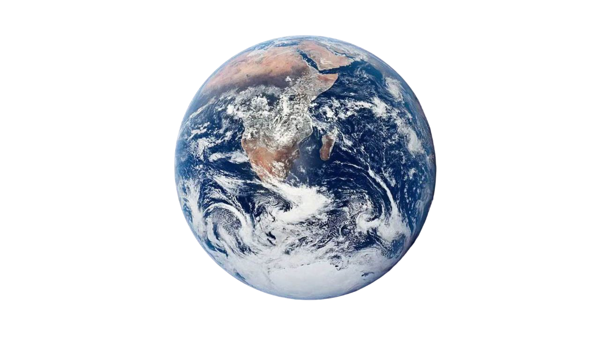
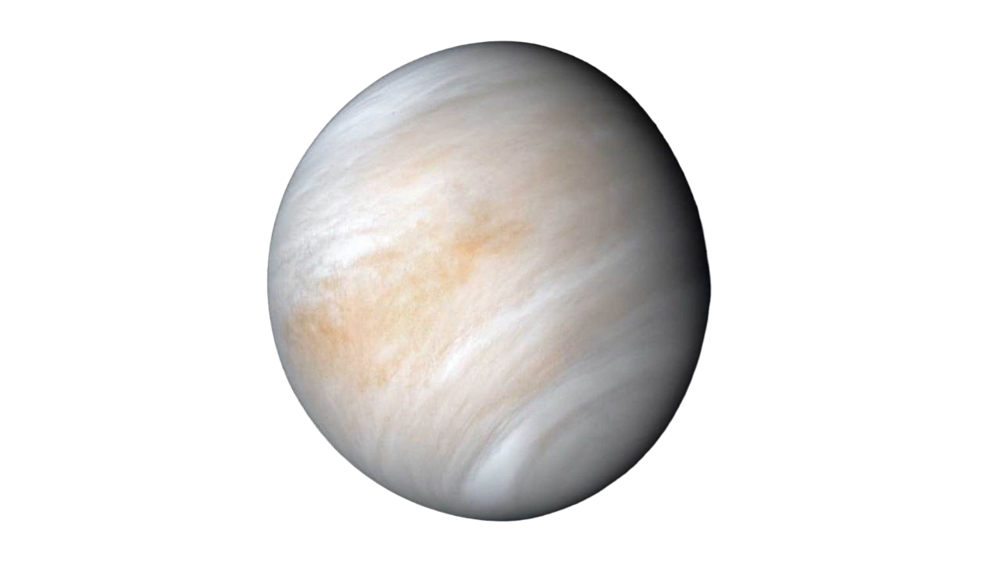
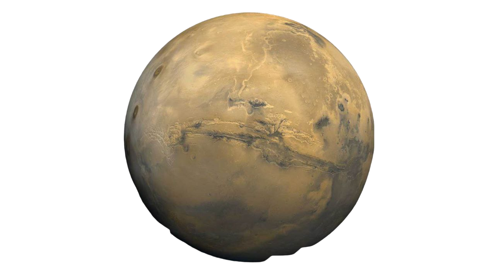
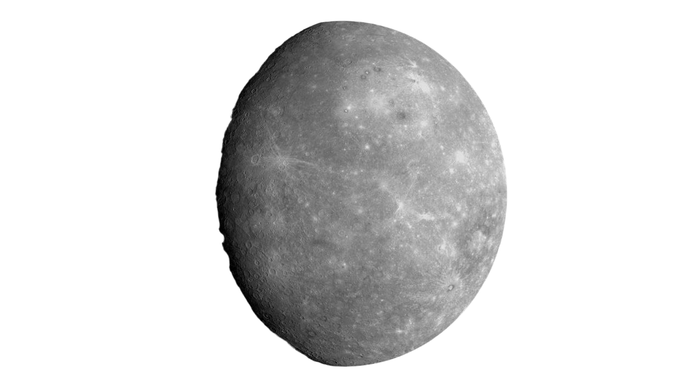
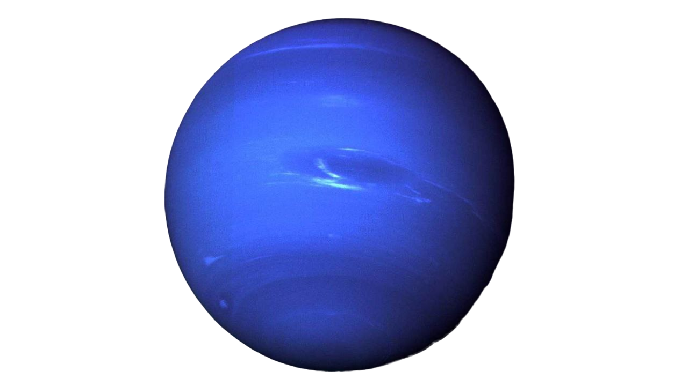
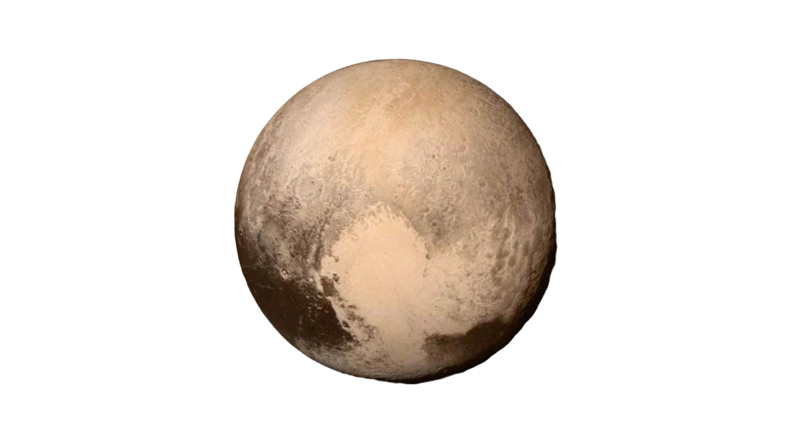
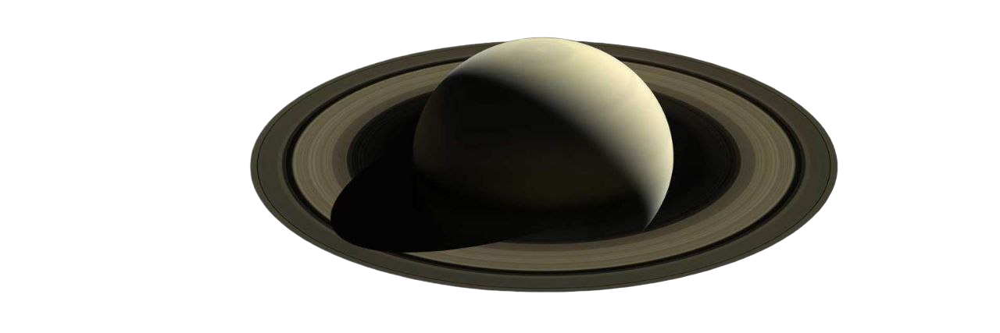
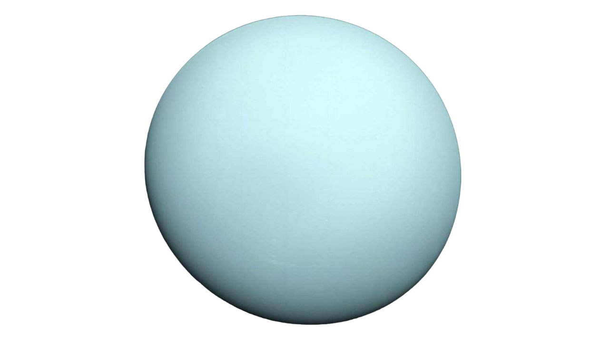
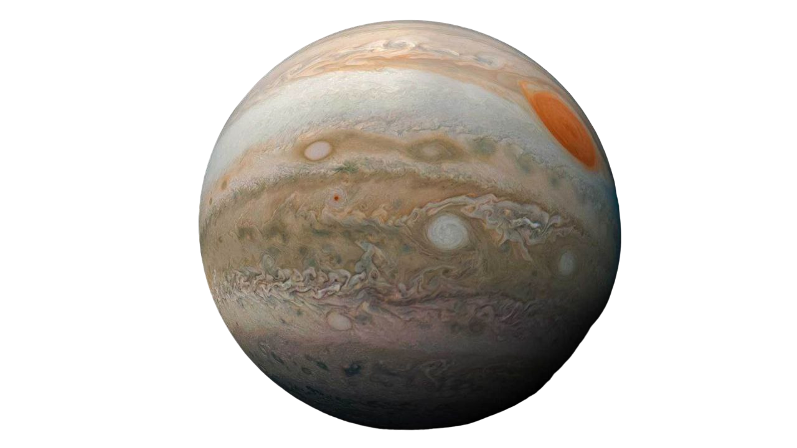

В солнечной системе восемь планет: Меркурий, Венера, Земля, Марс,
Юпитер, Сатурн, Уран и Нептун.
В нашей солнечной системе есть пять официально
признанных карликовых планет: Церера, Плутон, Хаумеа, Макемаке и
Эрида.

Земля – третья планета от Солнца и пятая по величине планета. Это единственное место, о котором
мы знаем, где обитают живые существа. На Земле очень благоприятная температура и смесь химических
веществ, которые сделали жизнь здесь обильной. В частности, Земля уникальна тем, что большая
часть нашей планеты покрыта жидкой водой, поскольку температура позволяет жидкой воде существовать
в течение длительных периодов времени. Огромные океаны Земли стали удобным местом для зарождения
жизни около 3,8 миллиарда лет назад. Имея экваториальный диаметр 7926 миль (12 760 километров),
Земля является крупнейшей из планет земной группы и пятой по величине планетой в нашей Солнечной системе.

Венера — вторая планета от Солнца и ближайший планетарный сосед Земли. Венера — третий по яркости
объект на небе после Солнца и Луны. Венера медленно вращается в противоположном направлении от
большинства планет.Венера вращается вокруг Солнца на среднем расстоянии 67 миллионов миль
(108 миллионов километров) или 0,72 астрономических единиц. Одна астрономическая единица
(сокращенно AU) — это расстояние от Солнца до Земли. С этого расстояния солнечному свету требуется
около шести минут, чтобы дойти от Солнца до Венеры. Близость Земли к Венере — вопрос перспективы.
Планета почти такая же большая, как Земля. Ее диаметр на экваторе составляет около 7521 мили
(12 104 километров) по сравнению с 7926 милями (12 756 километров) у Земли. С Земли Венера — самый
яркий объект на ночном небе после нашей собственной Луны. Поэтому древние придавали ей большое
значение в своих культурах, даже думая, что это два объекта: утренняя звезда и вечерняя звезда.
Вот где вступает в дело трюк перспективы.

Марс – четвертая планета от Солнца – это пыльный, холодный, пустынный мир с очень тонкой атмосферой.
Эта динамичная планета имеет времена года, полярные ледяные шапки, потухшие вулканы, каньоны и погоду.
С радиусом 2106 миль (3390 километров) Марс примерно в два раза меньше Земли. Если бы Земля была
размером с пятицентовую монету, Марс был бы примерно размером с малину. Со среднего расстояния
в 142 миллиона миль (228 миллионов километров) Марс находится на расстоянии 1,5 астрономических
единиц от Солнца. Одна астрономическая единица (сокращенно AU) — это расстояние от Солнца до Земли.
С этого расстояния солнечному свету требуется 13 минут, чтобы пройти путь от Солнца до Марса. Марс,
вращаясь вокруг Солнца, совершает один оборот каждые 24,6 часа, что очень похоже на один день
на Земле (23,9 часа). Марсианские дни называются солами — сокращение от «солнечные сутки».
Год на Марсе длится 669,6 солов, что равно 687 земным дням.

Самая маленькая планета в нашей солнечной системе и ближайшая к Солнцу, Меркурий лишь
немного больше Луны Земли. С поверхности Меркурия Солнце будет казаться в три раза больше,
чем при наблюдении с Земли, а солнечный свет будет в семь раз ярче. Радиус Меркурия
составляет 1516 миль (2440 километров), что составляет чуть больше 1/3 ширины Земли.
Если бы Земля была размером с пятицентовую монету, Меркурий был бы примерно
размером с чернику. Находясь на среднем расстоянии в 36 миллионов миль
(58 миллионов километров), Меркурий находится на расстоянии 0,4 астрономических единиц
от Солнца. Одна астрономическая единица (сокращенно AU) — это расстояние от Солнца до Земли.
С этого расстояния солнечному свету требуется 3,2 минуты, чтобы пройти путь от Солнца до Меркурия.

Нептун — восьмая и самая далекая планета в нашей Солнечной системе. С экваториальным
диаметром 30 775 миль (49 528 километров) Нептун примерно в четыре раза шире Земли.
Если бы Земля была размером с пятицентовую монету, Нептун был бы примерно размером
с бейсбольный мяч. Со среднего расстояния в 2,8 миллиарда миль (4,5 миллиарда километров)
Нептун находится в 30 астрономических единицах от Солнца. Одна астрономическая единица
(сокращенно AU) — это расстояние от Солнца до Земли. С этого расстояния солнечному
свету требуется 4 часа, чтобы пройти путь от Солнца до Нептуна.

В 2006 году Плутон был переклассифицирован в карликовую планету. Экваториальный диаметр
Плутона составляет около 1477 миль (2377 километров). Ширина Плутона составляет
около 1/5 ширины Земли. Со среднего расстояния около 3,7 миллиарда миль
(5,9 миллиарда километров) Плутон находится примерно в 39 раз дальше, чем Земля от Солнца.
С этого расстояния солнечному свету требуется 5,5 часов, чтобы добраться от Солнца до Плутона.
Если бы вы стояли на поверхности Плутона в полдень, Солнце было бы в 1/900 раз ярче, чем здесь,
на Земле, или примерно в 300 раз ярче нашей полной Луны. Каждый день около заката на Земле есть
момент , когда свет такой же яркий, как полдень на Плутоне.

Сатурн — шестая планета от Солнца и вторая по величине планета в нашей Солнечной системе.
С экваториальным диаметром около 74 897 миль (120 500 километров) Сатурн в 9 раз шире
Земли. Если бы Земля была размером с пятицентовую монету, Сатурн был бы примерно
размером с волейбольный мяч. Со среднего расстояния в 886 миллионов миль
(1,4 миллиарда километров) Сатурн находится на расстоянии 9,5 астрономических единиц
от Солнца. Одна астрономическая единица (сокращенно AU) — это расстояние от Солнца
до Земли. С этого расстояния солнечному свету требуется 80 минут, чтобы пройти путь
от Солнца до Сатурна.

Уран — седьмая планета от Солнца, и у него третий по величине диаметр среди планет
в нашей солнечной системе. Кажется, что Уран вращается вбок. С экваториальным
диаметром 31 763 мили (51 118 километров) Уран в четыре раза шире Земли.
Если бы Земля была размером с пятицентовую монету, Уран был бы примерно размером
с софтбольный мяч. Со среднего расстояния в 1,8 миллиарда миль (2,9 миллиарда километров)
Уран находится примерно в 19 астрономических единицах от Солнца. Одна астрономическая
единица (сокращенно AU) — это расстояние от Солнца до Земли. С этого расстояния солнечному
свету требуется 2 часа и 40 минут, чтобы добраться от Солнца до Урана.

Юпитер — мир крайностей. Это самая большая планета в нашей солнечной системе — если бы
она была полой оболочкой, внутри нее поместилось бы 1000 Земель. Это также самая старая
планета, образовавшаяся из пыли и газов, оставшихся после формирования Солнца
4,5 миллиарда лет назад. Но у нее самый короткий день в солнечной системе, ей требуется
всего 10,5 часов, чтобы совершить один оборот вокруг своей оси. С радиусом 43 440,7 миль
(69 911 километров) Юпитер в 11 раз шире Земли. Если бы Земля была размером с виноградину,
Юпитер был бы примерно размером с баскетбольный мяч. Со среднего расстояния
в 484 миллиона миль (778 миллионов километров) Юпитер находится на расстоянии
5,2 астрономических единиц от Солнца. Одна астрономическая единица (сокращенно AU) — это
расстояние от Солнца до Земли. С этого расстояния солнечному свету требуется 43 минуты,
чтобы пройти путь от Солнца до Юпитера.